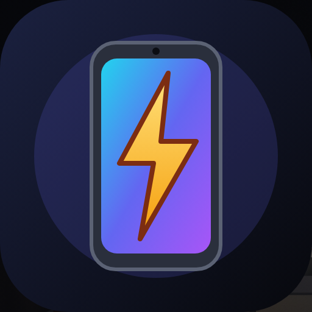
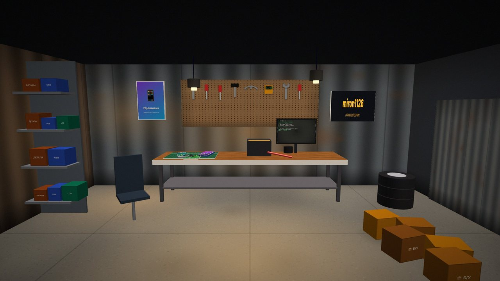

miron1126FLASH LAB
Стань мастером по прошивке и ремонту телефонов. Разбирай устройства в настоящем 3D, оживляй кирпичи, расти от гаража до сервисного центра и соревнуйся с друзьями онлайн.



Стань мастером по прошивке и ремонту телефонов. Разбирай устройства в настоящем 3D, оживляй кирпичи, расти от гаража до сервисного центра и соревнуйся с друзьями онлайн.
Фен с температурой, медиатор, отвёртки, пинцет, паяльник. Перетаскивай детали руками — и не порви шлейф.
Тестпоинты и QFIL для Qualcomm, Odin для Samsung, SP Flash Tool для MediaTek.
От Galaxy S2 до Pixel 8 Pro и Z Fold5. LineageOS, crDroid, порты One UI, HyperOS, Symbian и BlackBerry 10.
Гараж → магазин → сервисный центр. Сотрудники, филиалы, налоги, реклама, своя прошивка.
Друзья, кланы, личные сообщения, подарки, совместная мастерская, рынок, аукцион, дуэли и испытание дня.
Ходи по мастерской от первого лица, выходи на улицу, смена дня и ночи, дождь и снег.
Три сезона кампании, выборы в диалогах, озвучка, кат-сцены, бесконечная карьера.
На экране телефона: 2048, Змейка, Сапёр, Аэрохоккей, Судоку, Дартс и другие.



Скачай Setup, запусти, нажми «Установить». Если SmartScreen ругается: «Подробнее» → «Выполнить в любом случае».
Скачай APK, открой его и разреши установку из неизвестных источников. Новая версия ставится поверх старой.
Открой «Играть в браузере» в Safari → «Поделиться» → «На экран Домой». Игра откроется на весь экран и работает без интернета.